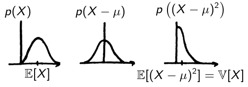

Gaussian random variables
Definition
A Gaussian (or normal) random variable has the probability density function (PDF)
Dimension
It is fully described by two parameters, its mean and variance (or ).
We write , or .
The standard normal distribution is .
Mean and Variance

dimension
Linear transformation
Consider the affine transformation where . The obtained also has a normal distribution with
Proof for \(Y=AX+b\)
$$ \begin{aligned} \mu_Y &= \mathbb{E}[AX+b] \\ &= A\mathbb{E}[X] + b \\ &= A\mu_X + b \\ \Sigma_Y &= \mathbb{E}[(Y-\bar y)(Y-\bar y)^\top] \\ &= \mathbb{E}[(AX+b - A\mu_X-b)(AX+b - A\mu_X-b)^\top] \\ &= \mathbb{E}[A(X-\mu_X)(X-\mu_X)^\top A^\top] \\ &= A\Sigma_X A^\top \end{aligned} $$Case \(Y=AX+b+\epsilon\)
Adding a gaussian noise \(\epsilon\sim\mathcal{N}(0,\Sigma_\epsilon)\) gives $$ \begin{aligned} \mu_Y &= A\mu_X + b \\ \Sigma_Y &= A\Sigma_X A^\top + \Sigma_\epsilon \end{aligned} $$One particular case is to obtain from the standard normal variable ,
where is the positive semidefinite symmetric matrix such that .
It may be obtained from the eigendecomposition of , in julia that is
dist = MvNormal(μ, Σ)
Λ,Q = eigen(Σ) # Σ = QΛ/Q
Σsqrt = Q*diagm(sqrt.(Λ))
Confidence region
The minimal volume which contains with a given probability (ellipsoid for a Gaussian variable). It is more straightforward to compute the probability given a volume, computations are below for dimensions 1, 2, 3, and here1 for dimension .
It is easier to compute it for a standard normal distribution (a centered segment/circle/sphere), then transform it into an ellipsoid usingthe linear transform for going from to .
1, 2, 3- rule for
| n | |||
|---|---|---|---|
| 1 | 68.3 | 95.5 | 99.7 |
| 2 | 39.3 | 86.5 | 98.9 |
| 3 | 19.9 | 73.8 | 97.1 |
dimension 1: \(\mathbb{P}(\mu - \sigma \leq X\leq \mu + \sigma)=0.683\)
Using a change of variable \(z=\frac{x-\mu}{\sigma}\), it amounts to computing \(\mathbb{P}(-1 \leq X\leq 1)\), $$ \begin{align} \mathbb{P}(\mu - \sigma \leq X\leq \mu + \sigma) &= \int_{\mu-\sigma}^{\mu+\sigma} \frac{1}{\sqrt{2\pi\sigma^2}}e^{\frac{-1}{2}\left(\frac{x-\mu}{\sigma}\right)}dx \\ &= \int_{-1}^1 \frac{1}{\sqrt{2\pi}}e^{\frac{-x^2}{2}}dx \\ &= 0.683 \end{align} $$ The solution is obtained numerically, there is no analytical solution to this integral.dimension 2: \(\mathbb{P}(\|X\| \leq 1)=0.393\)
For a standard normal distribution in dimension 2 \(X = (X_1, X_2)^\top\), $$ \begin{align} \mathbb{P}(\|X\| \leq 1) &= \mathbb{P}(X^\top X \leq 1) \\ &= \mathbb{P}(X_1^2 + X_2^2 \leq 1) \\ &= \int_{x_1^2+x_2^2\leq 1}\frac{1}{(2\pi)^\frac{n}{2}}e^{-\frac{x^\top x}{2}} \end{align} $$ whith \(n=2\) and \(x=(x_1, x_2)^\top\), $$ = \int_{x_1^2+x_2^2\leq 1}\frac{1}{2\pi}e^{-\frac{x_1^2+x_2^2}{2}} $$ Change of variable \(x_1=r\cos(\theta)\), \(x_2=r\sin(\theta)\) \(\implies r=\sqrt{x_1^2+x_2^2}\), and first integrating a quantity that does not depend on \(\theta\) from \(0\) to \(2\pi\), $$ \begin{align} &= \frac{1}{2\pi}\int_0^{2\pi}\int_0^1 r e^{-\frac{r^2}{2}} dr d\theta \\ &= \int_0^1 r e^{-\frac{r^2}{2}} dr \\ &= \left[ -e^{-\frac{r^2}{2}} \right]_0^1 \\ &= -e^{-\frac{1}{2}}-(-e^0) \\ &= 1-e^{-\frac{1}{2}} \\ &= 0.393 \end{align} $$ This is an analytical solution and an inverse formula exists to compute the radius \(r\) corresponding to a specific probability \(p\), $$ p = 1-e^{-\frac{r^2}{2}} \iff r = \sqrt{-2\ln(1-p)}. $$dimension 3: \(\mathbb{P}(\|X\| \leq 1)=0.199\)
For a standard normal distribution in dimension 3 \(X = (X_1, X_2, X_3)^\top\), $$ \begin{align} \mathbb{P}(\|X\| \leq 1) &= \mathbb{P}(X^\top X \leq 1) \\ &= \mathbb{P}(X_1^2 + X_2^2 + X_3^2\leq 1) \\ &= \int_{x_1^2+x_2^2+x_3^2\leq 1}\frac{1}{(2\pi)^\frac{n}{2}}e^{-\frac{x^\top x}{2}} \end{align} $$ whith \(n=3\) and \(x=(x_1, x_2, x_3)^\top\), $$ = \int_{x_1^2+x_2^2+x_3^2\leq 1}\frac{1}{(2\pi)^{3/2}}e^{-\frac{x_1^2+x_2^2+x_3^2}{2}} $$ Change of variable \(x_1=r\sin(\phi)\cos(\theta)\), \(x_2=r\sin(\phi)\sin(\theta)\), \(x_3=r\cos(\phi)\) \(\implies r=\sqrt{x_1^2+x_2^2+x_3^2}\), and first integrating a quantity that does not depend on \(\theta\) from \(0\) to \(2\pi\), and then \(\sin(\phi)\) from \(0\) to \(\pi\) which gives \(-\cos\pi - (-\cos 0) = 2\), $$ \begin{align} &= \frac{1}{2\pi^{3/2}}\int_0^{2\pi}\int_0^\pi\int_0^1 r^2\sin(\phi)e^{-\frac{r^2}{2}} dr d\phi d\theta \\ &= \frac{2\pi}{2\pi^{3/2}}\int_0^\pi\sin(\phi)\int_0^1 r^2e^{-\frac{r^2}{2}} dr d\phi \\ &= \frac{2}{\sqrt{2\pi}}\int_0^1 r^2e^{-\frac{r^2}{2}} dr \\ &= 0.199 \end{align} $$ The solution is obtained numerically, there is no analytical solution to this integral.-
Wang, B., Shi, W., & Miao, Z. (2015). Confidence analysis of standard deviational ellipse and its extension into higher dimensional Euclidean space. PloS one, 10(3), e0118537. ↩